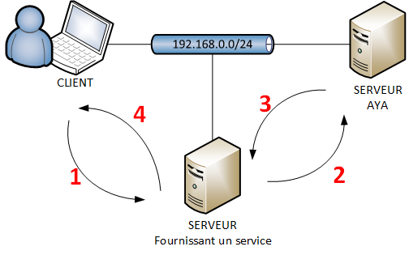

1. Présentation¶
1.1. Authentification Yubikey by Adacis¶
L’ensemble des fichiers correspondants au projet sont disponibles dans le git de référence.
(AYA) est un système permettant d’authentifier des utilisateurs via le protocole radius avec une yubikey.
La yubikey est une formidable boite noire qui embarque de nombreux protocoles pour s’authentifier sur différents services. Le principe est qu’une fois qu’un secret a été inséré dans la clef yubikey, il ne peut plus être lu.
Avertissement
Il faut sauvegarder ses secrets en lieu sûr si on souhaite les récupérer plus tard.
Les protocoles embarqués par la yubikey :
Important
Notre projet repose sur le système de code calculé Yubico OTP.
1.2. Docker¶
Docker est un système de container qui agit comme une machine virtuelle. Son intérêt est qu’il est plus léger et plus modulaire. Notre projet utilise Docker pour :
Sa facilité de mise à jour de chaque composant
Sa portabilité
Sa scalabitié
1.3. Les services / containers¶
Notre système se décompose en plusieurs micros services :
Un serveur freeradius pour recevoir les requêtes radius
Un serveur de validation Yubico
Un serveur de Key System Management
Un serveur web de gestion de la solution
Une base de données MariaDb
1.4. La logique¶
Un client fait une demande d’authentification sur le serveur fournissant un service
Le serveur fournissant un service interroge le serveur AYA pour validation des informations de connexion
Aya après avoir effectuer ses traitements authorise ou refuse la demande
Le serveur fournissant un service authorise ou refuse la connexion
1.5. OTP (on time password)¶
Note
Exemple de code généré par yubikey :
cccjgjgkhcbbirdrfdnlnghhfgrtnnlgedjlftrbdeut
cccjgjgkhcbbgefdkbbditfjrlniggevfhenublfnrev
cccjgjgkhcbbcvchfkfhiiuunbtnvgihdfiktncvlhck
Voici la page de référence yubico.
La clef est composée de deux parties :
Les 12 premiers caractères qui constituent l’identifiant publique de la clef, qui va permettre au système de faire le lien avec un utilisateur.
Les 32 suivants constituent la partie chiffrée de l’OTP. Vous pouvez voir la décomposition exact sur l’image ci-dessous.